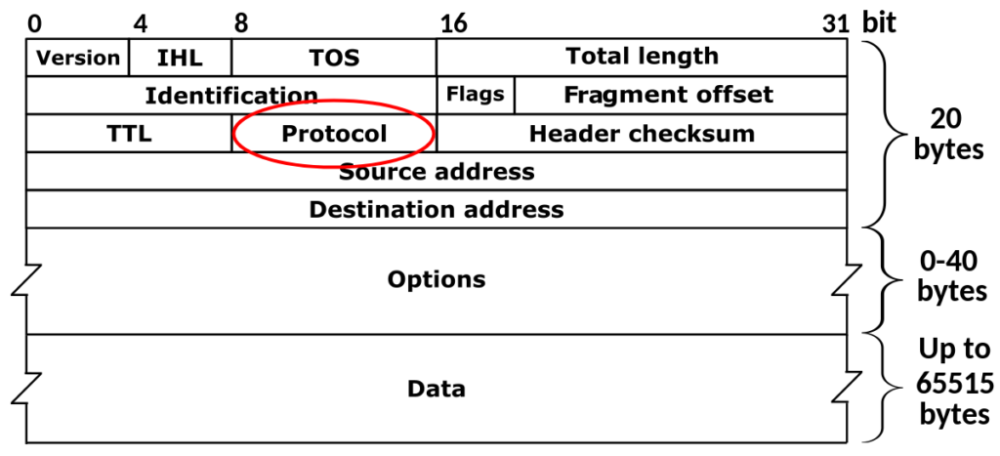

Diving into an eBPF + Go Example: Part 3 (Bonus Round)
With one example explored, I wanted to put a spin on it - Therefore, I had an idea:
“Can I use eBPF to identify and store the contents of the protocol header for IP packets on a specific interface?”

It’s more of a rhetorical question - of course we can! The code can be found here.
To summarise, the eBPF C program is a little more complicated. It still leverages XDP, however instead of counting the number of packets, it will inspect each IP packet, extract the protocol number, and store it in a map.
#include <linux/bpf.h>
#include <bpf/bpf_helpers.h>
#include <linux/if_ether.h>
#include <linux/ip.h>
struct {
__uint(type, BPF_MAP_TYPE_ARRAY);
__type(key, __u32);
__type(value, __u64);
__uint(max_entries, 255);
} protocol_count SEC(".maps");
SEC("xdp")
int get_packet_protocol(struct xdp_md *ctx) {
void *data_end = (void *)(long)ctx->data_end;
void *data = (void *)(long)ctx->data;
// Parse Ethernet header
struct ethhdr *eth = data;
if ((void *)(eth + 1) > data_end) {
return XDP_PASS;
}
// Check if the packet is an IP packet
if (eth->h_proto != __constant_htons(ETH_P_IP)) {
return XDP_PASS;
}
// Parse IP header
struct iphdr *ip = data + sizeof(struct ethhdr);
if ((void *)(ip + 1) > data_end) {
return XDP_PASS;
}
__u32 key = ip->protocol; // Using IP protocol as the key
__u64 *count = bpf_map_lookup_elem(&protocol_count, &key);
if (count) {
__sync_fetch_and_add(count, 1);
}
return XDP_PASS;
}
The Go application is over 100 lines, therefore for brevity, it can be viewed here.
The eBPF map to store this could be visualised as:
+----------------------------------------------------+
| eBPF Array Map |
| |
| +------+ +------+ +------+ +------+ +------+ |
| | 0 | | 1 | | 2 | | ... | | 254 | |
| |------| |------| |------| |------| |------| |
| | ? | | ? | | ? | | ... | | ? | |
| +------+ +------+ +------+ +------+ +------+ |
| |
+----------------------------------------------------+
Where the Key represents the IP protocol number and value counting the number of instances.
The Go application leverages a helper function to map the protocol number to name in stdout.
Running the application probes the map and outputs non-zero values and their corresponding key. It can be easily tested by running the app and generating traffic. Note how after executing ping the map updates with ICMP traffic.